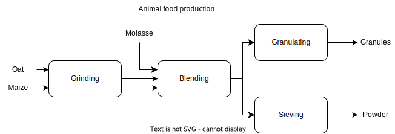

Code
import pandas as pd
import numpy as np
import pyomo.environ as pyocbarz
June 9, 2022
In blending or product mix problems, one tries to mix or extract ingredients subject to quality constraints.
In the following example we have multiple products, differnt raw materials and the products have different production steps.
We want to produce a predefined quantities of animal foods, namely granules and powder. These product must fulfill certain nutritional requirements and the raw materials - oat, maize and molasses - contain a different percentage of nutritions. Moreover the raw materials have different availablility, prices and enter the production process at different places. Also the production steps have different costs. Our goal is to find the recipie which minimizes the production costs.
This example is from (Guéret, Prins, and Sevaux 1999, chap. 6.2).

For our example we consider the following characteristics of the final product and the following raw materials with the the following properties:
data = {
'ModelName': "animal food",
'requirements': {
'Proteins':{
'min_content': 9.5,
'max_content': np.NaN,},
'Lipids':{
'min_content': 2.,
'max_content': np.NaN},
'Fiber':{
'min_content': 0,
'max_content': 6.0}
},
'raw_mat': {
'Oat':{
'Proteins': 13.6,
'Lipids': 7.1,
'Fiber': 7.0,
'availability': 11900.,
'costs': 0.13
},
'Maize':{
'Proteins': 4.1,
'Lipids': 2.4,
'Fiber': 3.7,
'availability': 23500.,
'costs': 0.17
},
'Molasses':{
'Proteins': 5.,
'Lipids': 0.3,
'Fiber': 25.0,
'availability': 750.,
'costs': 0.12
},
},
'prod_cost': {
'grinding': 0.25,
'blending': 0.05,
'granulating': 0.42,
'sieving': 0.17
},
'demand': {'granule': 9000., 'powder':12000.}
}print('requirements')
display(pd.DataFrame(data['requirements']))
print('raw materials')
display(pd.DataFrame(data['raw_mat']))
print('production cost per kilogram')
display(pd.DataFrame({'prod_cost': {
'grinding': 0.25,
'blending': 0.05,
'granulating': 0.42,
'sieving': 0.17
}}))
print('daily product demand in ton')
display(pd.DataFrame({'demand':{'granule': 9000., 'powder':12000.}}))requirements| Proteins | Lipids | Fiber | |
|---|---|---|---|
| min_content | 9.5 | 2.0 | 0.0 |
| max_content | NaN | NaN | 6.0 |
raw materials| Oat | Maize | Molasses | |
|---|---|---|---|
| Proteins | 13.60 | 4.10 | 5.00 |
| Lipids | 7.10 | 2.40 | 0.30 |
| Fiber | 7.00 | 3.70 | 25.00 |
| availability | 11900.00 | 23500.00 | 750.00 |
| costs | 0.13 | 0.17 | 0.12 |
production cost per kilogram| prod_cost | |
|---|---|
| blending | 0.05 |
| granulating | 0.42 |
| grinding | 0.25 |
| sieving | 0.17 |
daily product demand in ton| demand | |
|---|---|
| granule | 9000.0 |
| powder | 12000.0 |
Becacuse we want to know how much raw materials we use per product, we consider decision variables indexed by raw materials and products.
Before we give an algebraic representation of the model, we introduce the relevant problem notions:
The optimization problem above is described by the following linear program:
\[ \begin{array}{llll} \min & \sum_{r,f}cost_r * use_{r,f} & & \\ s.t. & produced_f := \sum_r use_{rf}& \forall f & (c0)\\ & produced_f \leq demand_f & \forall f & (c1)\\ & \sum_f use_{rf} \leq avil_r & \forall r & (c2)\\ & \sum_r use_r * content_{rc} \geq minreq_c * produced_f & \forall f,c & (c3)\\ & \sum_r use_r * content_{rc} \leq maxreq_c * produced_f & \forall f,c & (c4)\\ \end{array} \]
def animal_food(data):
m = pyo.ConcreteModel()
# sets
m.raw = pyo.Set(initialize = data['raw_mat'].keys(), doc = "raw materials r")
m.food = pyo.Set(initialize = data['demand'].keys(), doc = "products f")
m.prod_steps = pyo.Set(initialize = data['prod_cost'].keys(), doc = 'production step ps')
m.comp = pyo.Set(initialize = data['requirements'].keys(), doc = 'required components')
# vars
m.use = pyo.Var(m.raw, m.food, domain = pyo.NonNegativeReals, doc = "quantity of raw mat r used for product f")
m.produced = pyo.Var(m.food, domain = pyo.NonNegativeReals, doc = "produced quantity of food f")
# vars for output
m.food_comp = pyo.Var(m.food, m.comp, domain = pyo.NonNegativeReals, doc = "percentage of component c in final product f")
# param
@m.Param(m.food, doc = "demand for food f")
def demand(m,f):
return data['demand'][f]
@m.Param(m.raw, doc = "available quantity of raw mat r")
def avail(m,r):
return data['raw_mat'][r]['availability']
@m.Param(m.raw, doc = 'cost of raw material r')
def cost(m,r):
return data['raw_mat'][r]['costs']
@m.Param(m.prod_steps, doc = 'cost production step ps')
def pcost(m,ps):
return data['prod_cost'][ps]
@m.Param(m.raw, m.comp)
def content(m,r,c):
return data['raw_mat'][r][c]
@m.Param(m.comp, doc = 'minimal requirement per component c')
def minreq(m,c):
return data['requirements'][c]['min_content']
# Objective
m.mat_cost = pyo.quicksum(m.cost[r] * m.use[r,f] for r in m.raw for f in m.food)
m.grinding_cost = pyo.quicksum(m.pcost['grinding'] * m.use[r,f] for r in m.raw for f in m.food if f != 'Molasses')
m.blending_cost = pyo.quicksum(m.pcost['blending'] * m.use[r,f] for r in m.raw for f in m.food)
m.granul_cost = pyo.quicksum(m.pcost['granulating'] * m.use[r,'granule'] for r in m.raw)
m.siev_cost = pyo.quicksum(m.pcost['sieving'] * m.use[r,'powder'] for r in m.raw)
m.OBJ = pyo.Objective(expr = m.mat_cost +
m.grinding_cost +
m.blending_cost +
m.granul_cost +
m.siev_cost,
sense= pyo.minimize)
# constraints
@m.Constraint(m.food, doc = "definition of produced")
def c0(m,f):
return pyo.quicksum(m.use[r,f] for r in m.raw) == m.produced[f]
@m.Constraint(m.food, doc = "fulfill demand")
def c1(m,f):
return m.produced[f] >= m.demand[f]
@m.Constraint(m.raw, doc = "dont use more than available")
def c2(m,r):
return pyo.quicksum(m.use[r,f] for f in m.food) <= m.avail[r]
@m.Constraint(m.food, m.comp, doc = "minimal reuirement fulfilled")
def c3(m,f,c):
return pyo.quicksum(m.content[r,c] * m.use[r,f] for r in m.raw) >= m.minreq[c] * m.produced[f]
m.c4 = pyo.ConstraintList(doc = "fulfill maximal requirement")
for f in m.food:
for c in m.comp:
x = data['requirements'][c]['max_content']
if ~np.isnan(x):
m.c4.add(pyo.quicksum(m.use[r,f] * m.content[r,c,] for r in m.raw) <= x * m.produced[f])
@m.Constraint(m.food, m.comp,
doc = 'defintion of component c in final product f')
def c5(m,f,c):
return pyo.quicksum(m.use[r,f] * m.content[r,c,] for r in m.raw) == m.food_comp[f,c]
solver = pyo.SolverFactory('glpk')
solver.solve(m)
return mproduction costs: 15192.8